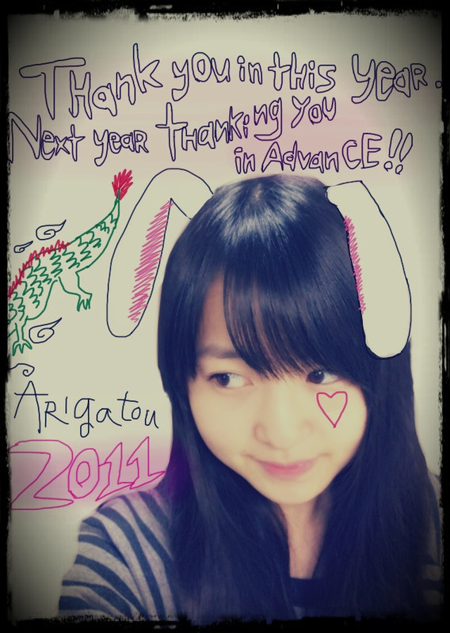
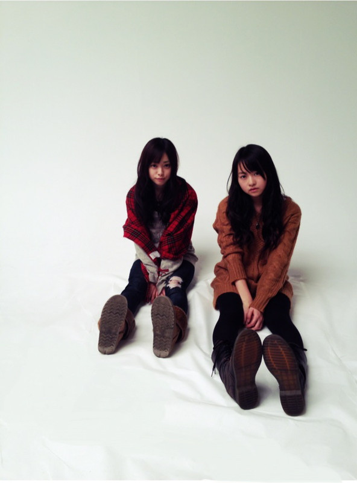
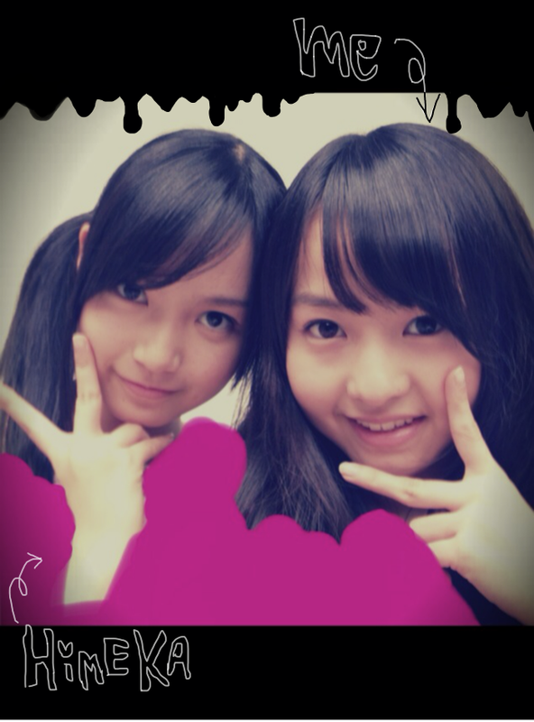
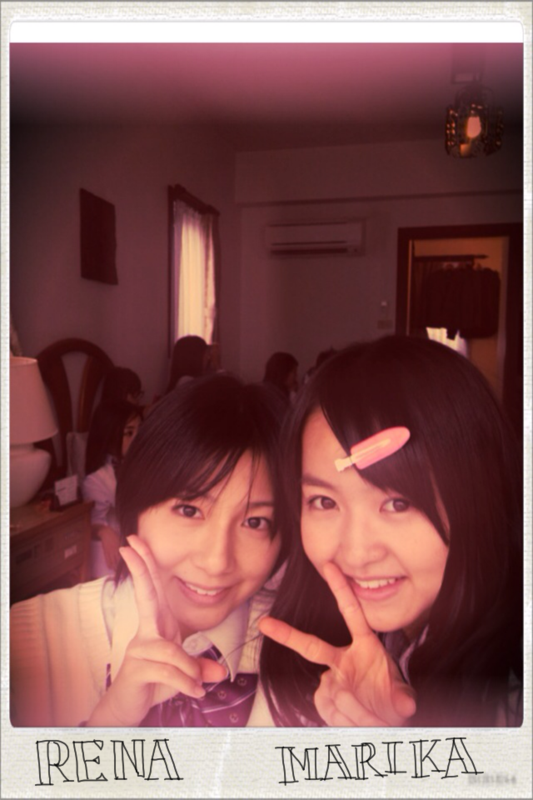

2011/1231Sat42回目*marika
更新2回目になります。
ベビたんだよ。!!
いつも読んでくださってる方、
初めて読んでくださった方、
コメントしてくださった方、
ありがとうございます☆
今年最後の記事になります=3
2011年は、
高校生になりました。
バレエの発表会がありました。
乃木坂46にメンバーになりました。
地震など
大変なことも沢山ありました。
今こうして、
乃木坂46のメンバーとして!
BloGをかいていること。
みなさんに出会えたこと!!
本当にすごいことなんだな
と思います。
貴重な一年でした。
家族、友達
メンバーみんな
沢山のスタッフさんに
お世話になりました。
来年あと何時間でくると思うと
どきどきわくわくです:)
では、今年最後の質問お答えします:D
...................................
・年賀状どこに送れてばいい？
〒102-8353
東京都千代田区六番町4番地5
「乃木坂46運営事務局」宛
にお願いします^^*
ありがとうございます♡
・イベ行けてなくても
blogコメ常連さんの
名前って覚えますか？
はい !!
覚えてます><☆
・最近のｵｽｽﾒｱﾌﾟﾘ教えて！
『スヌーピーストリート』
『角栓にゅるっ』
『Music Beam』
おすすめ♪
・何でオーディション受けたの？
今までいろいろな
オーディションを受けて
『アイドル』は最後の挑戦だ!!
と思って受けました。
・家族はみんな童顔なんですか？
この顔はパパ譲りなので
パパも童顔だね^^いひ
おとうちゃん童顔!
・好きな（もしくは歌った）
合唱曲って何？
『時の旅人』すきです!!
『心の瞳』も感動します*
・男性にはどんな服装してほしい？
似合っていれば^^!
私からこんな格好にして!!
とは言えません><
自分の好きなものを着よ~☆
・顔のパックはどこで買ったの?
韓国の使ったり...
Pure Smile
が自分の中ではやり ♡
乃木メンも使ってるよん:)
・街で見かけたら声に出して
叫ばないほうがいいですか？
ええっ!
そんな声かけられるほどの者では
ないので.....ほんとに。←
さけぶ!!!
ちょいとびっくりしちゃいます; ;
声かけられたら、うれしいだろな♪
わかんないだろうな笑
...................................

今年はお世話になりました。
来年もよろしくお願いします。
2012年は
伊藤万理華を
もっともっともっともっと
知ってもらえるように
Lesson、お仕事
頑張ります!!
今年もお疲れさまりか*
だいすき

＊＊＊
2011年ありがとう。
絆を忘れません。
＊＊＊
ベビたん*****bA by marika
2011/1231Sat41回目*marika
こんばんわまりかです＊
いつも読んでくださってる方、
初めて読んでくださった方、
コメントしてくださった方、
ありがとうございます。
*****HaPPy BirtHDay*****
生駒ちゃん♡2011.12.29
めっちゃおめでとう*!!
いつも一緒に変な顔してくれて
ありがとうね。
もっけもっけしてるのに
しっかりしてて
ちゃんと考えてる
生駒ちゃん......:3☆
だいすきだぞおおぉお ♡♡
生駒ちゃんとのしゃしん
まだ載っけたことないんやけどね。
なんでかというとね....
変顔しかないからなの-----!!!!←えぇ-
今度かわいく
２ショ撮ろうぜぃ:D♡
ほんとにおめでとう*＊。ChU
..........そいえばね。
パックしたしゃしん載せて
これは誰でしょう?
て問題出しといて
.....正解を言ってなかったていうね...
簡単かと思ってたんですけど
みなさん、難しかったね^^
奥がねねで
手前がわ、た、し :3
てへぺろ。
伊藤ちゃんずでした!!
当たった方!!
おめでとう＊ぱちぱち
そんな流れで
伊藤ちゃんず

今日、
お手紙、プレゼント
読みました><
またうずうずしちゃいまして
電車で読みました...
こんなに沢山書いてくださって
みなさんあったかくて
うれしいです。
ありがとうございます＊
感謝
感謝

ひめか♡
かわゆい子だー
ええ子やー
だいすき----><
また更新します☆

2011年ありがとう。
LOVE
ベビたん*****bA by marika
2011/1229Thu40回目*marika
こんばんわ!!
いつも読んでくださってる方、
初めて読んでくださった方、
コメントしてくださった方、
ありがとうございます☆
.................................
・中学生のころの思い出話とか聞かせて！
私は3年生の時の思い出が強くて、
いつめんが本っ当に!めっちゃ楽しくって!!
毎日げらげら笑ってました。
行事であんまり泣くことはなかったのに
体育祭、合唱コンクールで
終わったあと沢山泣きました;)
沢山泣いた。熱かったです。
良い思い出*
・何ケーキが好きなの？
イチゴいっっぱいの♡
チーズケーキも好きです。
・でっかいもこもこのやつ、スリッパ？
前にひとめぼれして買ったスリッパです♡
あっ。ゴジラじゃないよ!!
オオカミ...だと思うよ!!←
・ワニと一緒に映ってるのって
ベビたんの家？
そうです^^*
リビング♪
・乃木どこのベビたんの謝らなきゃ
いけなかったことって、なに？
そこは.....
あえて言わない。笑
・まりりんはねねころに対しては
「同じ伊藤の名前…」
として何か思ったりしたのかな？
やっぱり、ずっと
オーディション一緒だったから
ねねをいちばん覚えてましたよ~!
本当に
「あっ。同じ名字....」
って笑
.....言わなくても、お互い戦ってました。←
・まりかちゃんもパックしたの？
昨日もパックした:D!!
プルンプルンでした=33
・ＡKB48系統に推しメンいたりしますか？
そこまで詳しくなかったので
推し...は、わからないです;(
・口笛って吹ける？
吹けます吹けます!!
・好きな海のスポーツ有る？
海...
水系は得意じゃないです><
・好きな風景は？
夕焼けのピンクのグラデーション＊
森の中。木とか葉っぱ
・やっぱり同じ年メンバーと仲が良いの？
そうですね!!
でもみんな仲良しですよ♡
・中学生メンバーとは遊んだりするの？
まだ遊んだことないなぁ...
でもじゃれます笑
・正月の予定は？
お仕事!!かな...
・お年玉で何買う？
どうしよっ
貯めようかなっ!!
でも、欲しいもの沢山あるわ~><
・初対面の人のどこを初めに見ます？
服装とか...
・ファッションセンスはお母さん譲りなの？
そうかも。
趣味とか好みがほとんど一緒ですもん:3!
・ティペットってなんでしょーか？
ああ、えっとですね...
付け襟の部分をファーにした
マフラーみたいな感じのやつです!!
(説明へたくそですみません...)
・大晦日は家族と過ごすのかな？
はい^^!!
・年が明ける瞬間何をするかな？
ケータイの画面見つめてるかな...!!
ここまでで!!
.................................
やっと返せました。
遅くなってすみません><
そういえば、もうちょとで
2011年が終わってしまうのか...:O!!
部屋の掃除しなきゃっ
思い出してみると
本当にいろいろなことが
沢山ありました。
どれもこれも
大切な思い出です＊
体調くずさんようにしなああぁ><
明日、お仕事あります*
がんばります^^

れな^^
今日もお疲れさまりか☆
みなさん、新年に向けて
一緒に頑張っていきましょう♪

LOVE
ベビたん*****bA by marika
2011/1227Tue39回目*marika
{kind=link}
{kind=link}
こんばんは‼***
いつも読んでくださってる方、
初めて読んでくださった方、
コメントしてくださった方、
ありがとうございます♪
今日もケータイからです:D!!
温泉入ってきました○
みさみさとねねと真洋と ♡♡
気持ちよかったわ～
今真洋がとなりにいます^^ふふ
楽しいです。
真洋とのしゃしん。
じゃっかんぶれてるー笑
と、クリスマスの日に着たコーデ☆
ファーのティペット着てるの
わかりにくいかな⁇
赤のニットにグリーンのチェックのスキニー
はいてみましたよん:)
最近BloG短くてすみません><
質問お答えは家でゆっくりかきます。
今日もお疲れさまりか＊
明日も一緒に頑張ろう‼
おやすみなさい。
ベビたん*****bA by marika
2011/1226Mon38回目*marika
{kind=link}
{kind=link}
まりかよん。
更新2回目ちゃいっ‼
せいらの家にお泊りしとるの~:D!!
ねねとみさみさとせっちゃんと私で♡
楽しい♪
パックしてんの。
だーれだ‼
お肌ぷるんぷるんよん:)
そして、この前の自撮り---☆**
明日も一緒に頑張ろう！
ベビたん*****bA by marika